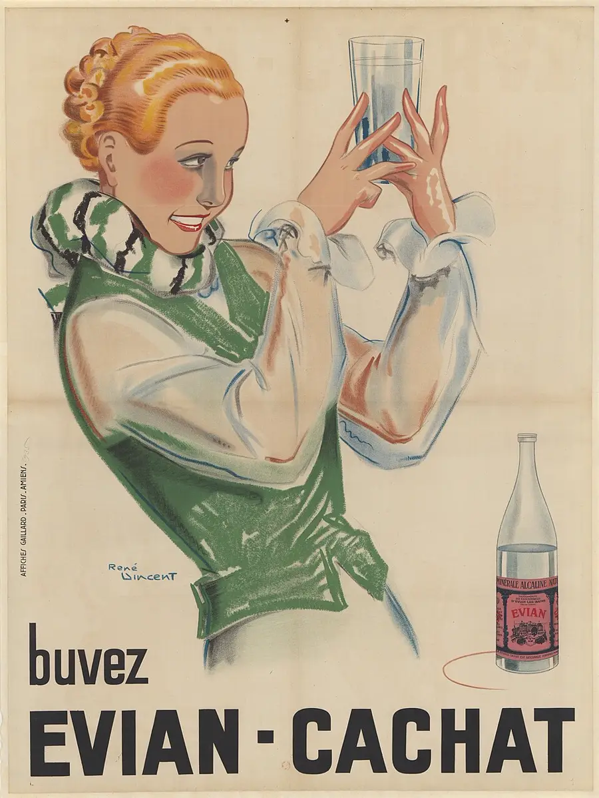

대표 로고대표 브랜드 마크
대표 로고대표 브랜드 마크에비앙 Evian
에비앙(Evian)은 제네바호 남쪽 기슭의 Évian-les-Bains 인근 여러 수원에서 미네랄워터를 병에 담아 판매하는 프랑스 브랜드이다. Danone이 소유하고 있다.
최종 업데이트
에비앙은 어떤 브랜드인가
에비앙은 제네바호 남쪽 기슭에 있는 Évian-les-Bains 인근의 여러 수원에서 미네랄워터를 병에 담아 판매하는 프랑스 브랜드이다. 프랑스의 다국적 기업 Danone이 소유하며, Danone Group은 이 이름을 유기농 스킨케어 제품 라인과 Évian-les-Bains의 럭셔리 리조트에도 사용한다.
이 브랜드는 할리우드 유명인에게 인기 있는 이미지를 추구해 왔으며, 하이패션 디자이너와 협업한 한정판 병을 자주 내놓는다. 2015년에는 프랑스 알프스에 있는 생산 시설이 프랑스에서 가장 큰 탄소중립 식음료 생산 시설이었다.
2018년에는 2025년까지 모든 플라스틱 병을 100% 재활용 플라스틱으로 만들겠다고 발표했다. 2020년 4월 탄소중립 달성을 주장했으며, 이를 둘러싼 집단소송은 2024년 1월 진행을 허용하는 판단을 받았다.
에비앙은 어떻게 시작되고 성장했나
에비앙의 기원은 1826년 광물 생수 회사 Societe des Eaux Minerales가 설립된 때로 거슬러 올라간다. 1859년 'Société anonyme des eaux minérales de Cachat'라는 이름으로 주식회사가 되었고, 이듬해 사부아가 토리노 조약에 따라 프랑스에 편입되면서 프랑스 회사가 되었다.
1878년 프랑스 보건부가 의학아카데미의 권고에 따라 Cachat 물의 병입을 다시 허가했다. 1908년 유리병 판매를 시작했고, 1969년 첫 PVC 병을 내놓았다.
이듬해 BSN Group이 에비앙 브랜드의 지분 100%를 확보했으며, BSN Group은 훗날 Danone Group이 되었다.
에비앙의 브랜드 아이덴티티는 무엇인가
제네바호 남쪽 기슭 Évian-les-Bains 인근 수원의 미네랄워터 브랜드로, 하이패션 디자이너와 협업한 한정판 병을 자주 내놓는 점이 특징이다.
에비앙의 대표 제품과 서비스는 무엇인가
에비앙의 중심 제품은 Évian-les-Bains 인근 수원에서 병에 담는 미네랄워터이다. Danone Group은 에비앙 이름을 유기농 스킨케어 제품 라인과 Évian-les-Bains의 럭셔리 리조트에도 사용한다.
하이패션 디자이너와 협업한 한정판 병도 자주 내놓았으며, 2013년 Diane von Fürstenberg, 2014년 Elie Saab, 2015년 Kenzo, 2016년 Alexander Wang, 2017년 Christian Lacroix, 2018년 Chiara Ferragni, 2019년과 2020년 Virgil Abloh, 2021년 Moncler, 2022년 Balmain이 디자인했다. 2023년에는 Balmain과 'Balmain X Evian'이라는 하이패션 컬렉션을 선보였다.
에비앙은 지금 어떤 상태인가
에비앙은 Danone이 소유하고 있다. 2018년 2025년까지 모든 플라스틱 병을 100% 재활용 플라스틱으로 만들겠다고 발표했고, 2020년 4월 탄소중립을 달성했다고 주장했다.
2022년 10월 이 주장이 허위이며 오인을 일으킨다는 이유로 소비자 집단소송이 제기되었고, 2024년 1월 미국 연방지방법원 판사 Nelson S. Román은 소송이 진행될 수 있다고 판단했다.
브랜드 앰배서더로는 가수 Dua Lipa와 테니스 선수 Emma Raducanu가 있다.
에비앙 로고는 어떻게 변해왔나
대표 로고대표 브랜드 마크사진으로 보는 에비앙의 역사

자주 묻는 질문
에비앙는 어느 나라 브랜드인가요?
에비앙는 프랑스의 식음료 브랜드입니다.
에비앙는 언제 설립되었나요?
에비앙는 1829년 설립되었습니다.
에비앙의 브랜드 아이덴티티는 무엇인가요?
제네바호 남쪽 기슭 Évian-les-Bains 인근 수원의 미네랄워터 브랜드로, 하이패션 디자이너와 협업한 한정판 병을 자주 내놓는 점이 특징이다.
에비앙의 대표 제품은 무엇인가요?
에비앙의 중심 제품은 Évian-les-Bains 인근 수원에서 병에 담는 미네랄워터이다.
에비앙는 어느 기업이 소유하고 있나요?
에비앙은 Danone이 소유하고 있다.
에비앙의 공식 웹사이트는 어디인가요?
에비앙의 공식 웹사이트는 https://www.evian.com/en_int/ 입니다.
출처와 검증
에비앙 관련 참고: 공식 웹사이트 · 위키데이터 Q1050918 · 한국어 위키백과 · 영어 위키백과. 브랜드명은 한글과 원어를 함께 표기하되 데이터에 없는 표기는 만들지 않습니다. 기원 국가·설립연도는 검수된 정의문에서 확인된 값을 우선하고, 없을 때만 공식 웹사이트 URL이 일치하는 위키데이터 개체의 값을 씁니다. 위키데이터 값은 2026-11-07 기준입니다.